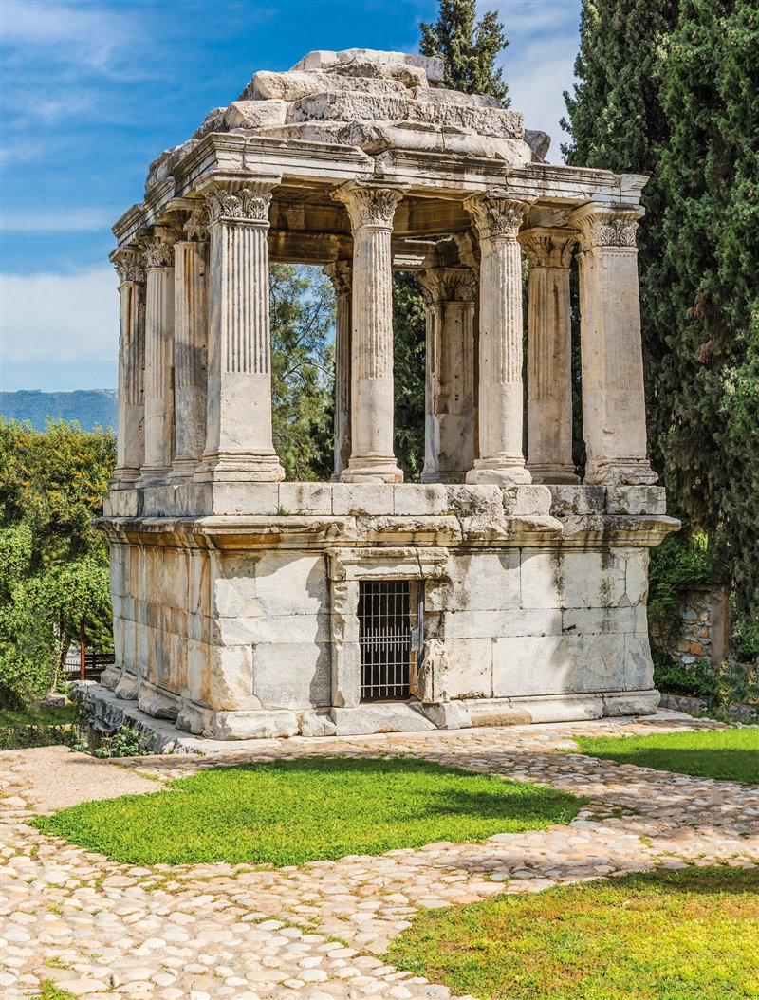
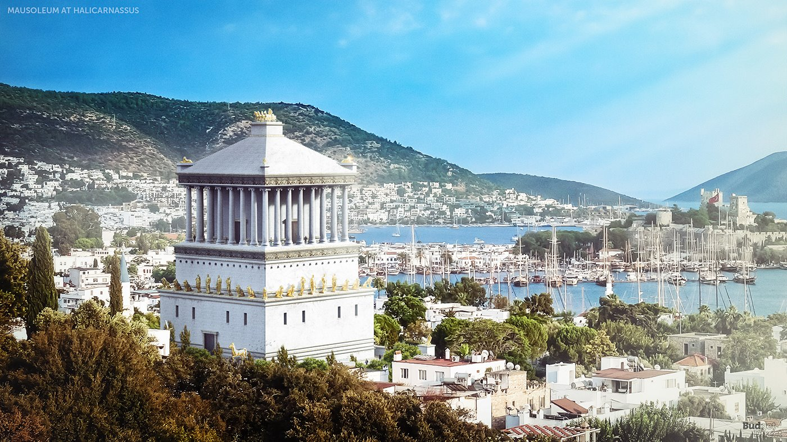

Ubicación: Halicarnaso (actualmente Bodrum, Turquía). Arquitectos: Piteo y Sátiro de Paros. Construcción: 353 a. C. y el 350 a. C. Altura: 46 m. Estado: destruido en el terremoto de 1404..

El Mausoleo de Halicarnaso, también conocido como el Sepulcro de Mausolo, fue construido entre los años 353 a. C. y el 350 a. C. en la región de Bodrum (antiguamente Halicarnaso) en Turquía. Después de las pirámides de Guiza, es el monumento antiguo que duró más tiempo. Tras siglos de resistir toda clase de acontecimientos históricos, solo un terremoto lo pudo destruir en 1404.
El monumento funerario te Mausolo tenía 46 metros de alto y un perímetro de 134 metros. Debajo de la construcción habían túneles que conducían a las tumbas de los reyes. Tenía cuatro niveles ricamente decorados con esculturas de los grandes artistas griegos del período, entre ellos, Escopas de Paros, Timoteo, Leocares y Briaxis. Hoy solo pueden conocerse algunos fragmentos en el Museo Británico..
